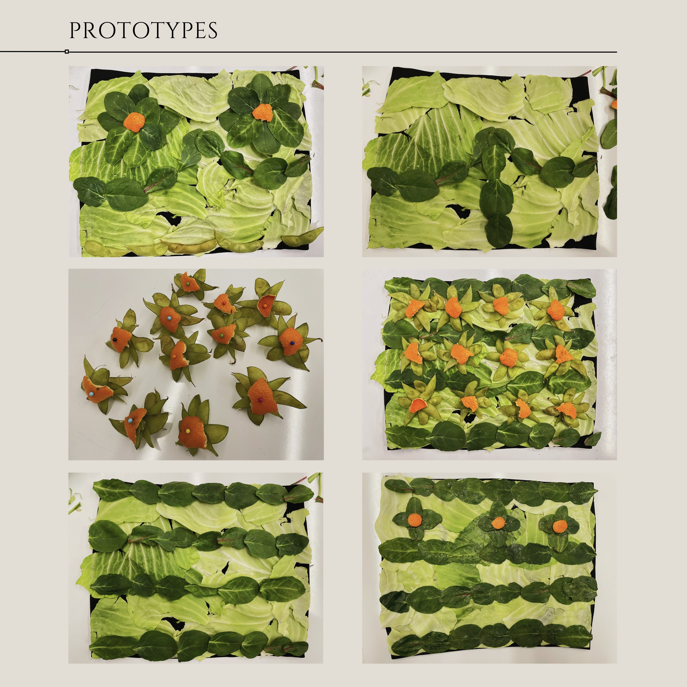

Product Designs
During my Design with Climate Change taught by Professors Peder Anker and Mitchell Joachim, I ideated multiple green projects throughout the semester. Here are a few of them:
Veggie Top


Upcycled Trash Dress
During my 2019 fall semester at NYU Shanghai, I worked as a designer for Green Shanghai's Trash Fashion Show. I contributed to their collection by designing and creating a dress made out of recycled materials and trash. Here's a video of the event.